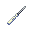

Hacking
Hacking in Shiptest is similar to hacking in other SS13 servers. However, the list of things you can actually hack is a little smaller. Certain station consoles don't exist on ships alongside a lot of other pieces of station equipment. This guide will cover what you can get your grubby little hacker hands into, and why it benefits you.
Tools of the Trade
Before you can start hacking, you'll need tools. Here's an itemized list of essentials (and less-essentials) and what they do:
Essentials:
-  A screwdriver for getting the maintenance panel open in the first place. The first step to hacking literally anything is to screwdriver it.
 A multitool for pulsing wires to find out what they do. Multitools affect a temporary state change in a wire, showing you a clue for what that wire does.
A multitool for pulsing wires to find out what they do. Multitools affect a temporary state change in a wire, showing you a clue for what that wire does. Wirecutters for snipping wires permanently. Make sure to measure twice and cut once.
Wirecutters for snipping wires permanently. Make sure to measure twice and cut once.
Semi-essentials:
 Cable coil for mending cut wires. Mending a wire doesn't reduce the amount of coil you have, so you only need one.
Cable coil for mending cut wires. Mending a wire doesn't reduce the amount of coil you have, so you only need one. Insulated gloves for surviving the inevitable shocks that come with pulsing and cutting various wires. Hacking can take a long time without a pair.
Insulated gloves for surviving the inevitable shocks that come with pulsing and cutting various wires. Hacking can take a long time without a pair. A crowbar for prying open unpowered airlocks if you don't have cable coil to power them. Also good for beating back snitches.
A crowbar for prying open unpowered airlocks if you don't have cable coil to power them. Also good for beating back snitches.- A notetaking device, either ingame or in real life. Use it to write down what wire corresponds to what function on each machine. Devices everywhere, on every ship, share wire functions with each other, so find a practice airlock and do your homework.
Most of your hacking kit can be found (and housed) inside a standard blue toolbox. Remember to grab a multitool, cable, and insulated gloves.
Remember: You need to have the tool in hand to perform a hacking function! Hold the multitool for pulsing, wirecutters for cutting and mending, and the signal device for attaching a remote.
Machine Index
Now that you have your tools, it's time to start hacking. This section of the guides details machines, their possible wire functions, and the steps to hack them.
Airlocks
 To open: Click the airlock with a screwdriver to open the emergency panel. This changes the sprite, so make sure to secure it again after! Then, use a multitool or wirecutter to begin hacking.
To open: Click the airlock with a screwdriver to open the emergency panel. This changes the sprite, so make sure to secure it again after! Then, use a multitool or wirecutter to begin hacking.